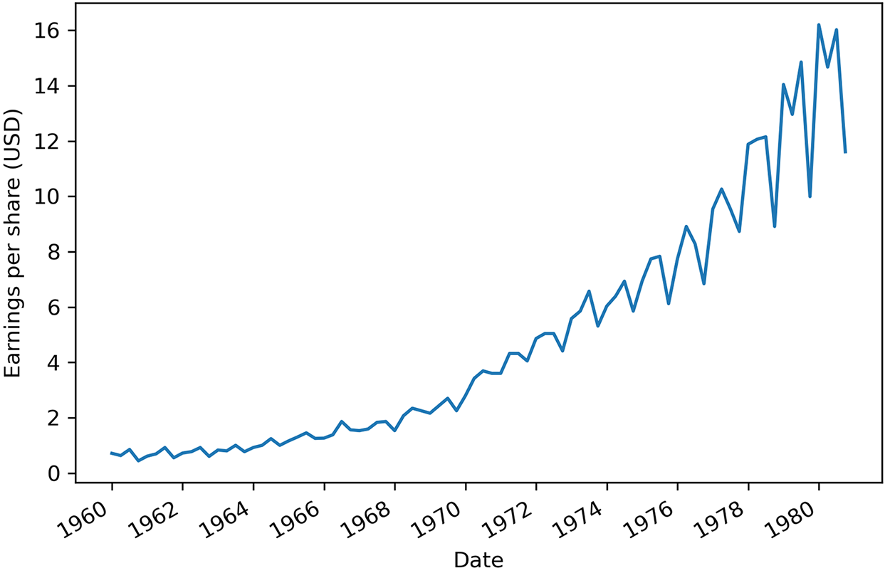
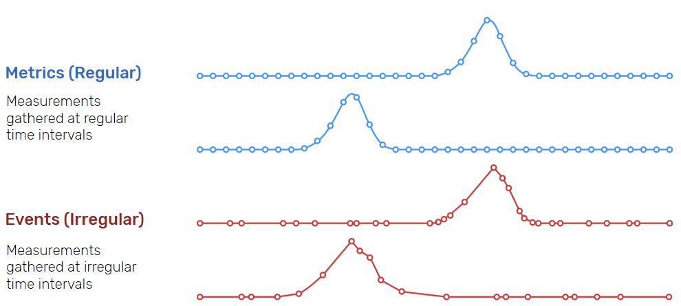
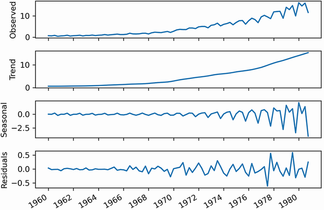

Sesión 1 - Series temporales y arranque del laboratorio
Objetivos de la sesión
Al finalizar esta sesión deberías ser capaz de:
- Distinguir una serie temporal de otros tipos de datos y describir sus componentes.
- Justificar por qué una base de datos de series temporales es la opción adecuada para datos de sensórica.
- Poner en marcha el laboratorio OTITIA y verificar que todos sus servicios responden.
- Explicar el papel de cada servicio dentro del flujo de datos del proyecto.
El proyecto que vamos a construir¶
Durante las próximas ocho sesiones vamos a montar un sistema completo de telemetría industrial. No un ejercicio aislado por sesión, sino un único sistema que iremos ampliando hasta que funcione de extremo a extremo.
El recorrido del dato será este: unos sensores generan lecturas, esas lecturas viajan por un bus de mensajería, se almacenan en una base de datos de series temporales, se consultan y agregan, se visualizan en cuadros de mando y, finalmente, se interpretan mediante un modelo de lenguaje que redacta informes en castellano.
Nuestro laboratorio se llama OTITIA y se despliega íntegramente con Docker. En esta primera sesión no vamos a ingerir todavía ningún dato: vamos a entender qué tipo de dato vamos a manejar y a dejar el laboratorio funcionando.
¿Y los sensores físicos?
En este proyecto la sensórica es simulada. Programaremos flujos que generan lecturas realistas y consumiremos alguna API meteorológica real. Todo lo demás (el bus, el almacenamiento, las consultas, la visualización) es exactamente igual que en una instalación real.
La razón es práctica: con sensores físicos, el 80 % del tiempo de clase se iría en cableado y drivers. Simulando la sensórica podemos centrarnos en la arquitectura de datos, que es lo que estamos aprendiendo.
Series temporales¶
Una serie temporal es un conjunto de valores que se miden y, por lo tanto, se almacenan de forma secuencial en el tiempo, de manera que el orden cronológico es fundamental.
Estos valores normalmente se miden en intervalos regulares de tiempo, de manera que están espaciados en el tiempo con la misma separación temporal, ya sean horas, minutos, días, meses, trimestres, etc... La forma más sencilla de comenzar el análisis de una serie temporal es mediante su representación gráfica. En el eje X (horizontal) se representa el tiempo, y en el eje Y (vertical), los valores a analizar:

En IoT, cada sensor genera datos etiquetados con un timestamp (marca temporal).
Al capturar datos de series temporales a lo largo de un periodo determinado, podemos observar cómo ha evolucionado o cambiado el sistema, lo que ayuda a identificar tendencias, tomar medidas proactivas o hacer predicciones futuras. Por ejemplo, trabajamos con datos de series temporales cuando revisamos el uso de CPU y memoria de un servidor durante la última semana, exploramos las fluctuaciones del tipo de cambio de divisas durante los últimos tres meses o analizamos las constantes vitales de un paciente recogidas durante el último año.
Tipos¶
Las series temporales se caracterizan por una generación regular (métrica) o irregular (evento) de periodos temporales. Además, implican grandes volúmenes de datos, como pueden ser ficheros de logs o sensórica de elementos IoT, los cuales tienen una alta frecuencia de creación.

Dadas estas características, las series temporales se emplean principalmente para la predicción y análisis de tendencias en muchos servicios financieros y aplicaciones IoT.
Los dos tipos aparecerán en nuestro proyecto
Cuando simulemos los sensores generaremos métricas: una lectura de temperatura cada 30 segundos, llueva o truene. Pero cuando una lectura supere un umbral y dispare una alarma, eso será un evento: ocurre cuando ocurre, sin periodicidad.
Es una distinción que conviene tener presente, porque condiciona cómo se consultan los datos. La media de una métrica tiene sentido; la media de unos eventos, normalmente no.
Características¶
Toda serie temporal tiene dos características clave:
- Cada punto de datos incluye la hora asociada a la medición o evento.
- Los datos de series temporales son, por naturaleza, de tipo "append-only", lo que significa que una vez registrada y almacenada una medición o evento, nunca se actualiza.
Si nos centramos en las características de los datos provenientes de sensórica IoT, podemos destacar:
- Dependencia temporal: los datos cercanos en el tiempo suelen estar correlacionados.
- Tamaño creciente: en IoT, los datos llegan en flujo continuo (data stream).
- Importancia del tiempo: el análisis depende tanto del valor como del momento.
- Alta frecuencia de muestreo: Los sensores pueden generar datos a intervalos muy cortos (por ejemplo, cada milisegundo).
- Variabilidad en la calidad de los datos: Los datos pueden verse afectados por interferencias, ruido o fallos en el sensor.
Sus valores pueden ser:
- discretos: entre un conjunto finito de valores, por ejemplo, la cantidad de hermanos en una familia. Se suelen expresar mediante un número entero.
- continuos: tienen un cantidad infinita de valores y se expresan mediante número reales, por ejemplo, la temperatura que recoge un sensor.
Append-only no es un detalle menor
De todas las características anteriores, la que más consecuencias tiene sobre el diseño del sistema es que los datos nunca se actualizan. Un sensor no corrige la lectura que hizo hace diez minutos: registra una nueva.
Esto significa que toda la maquinaria que una base de datos relacional dedica a soportar UPDATE y DELETE eficientes (bloqueos, versiones de fila, índices actualizables) es peso muerto en este escenario. Las bases de datos de series temporales renuncian a parte de esa maquinaria a cambio de escribir mucho más rápido. Volveremos sobre esto en la sesión 4.
Descomposición¶
La descomposición de una serie temporal consiste en separar la serie original en sus distintos componentes para poder analizarlos de manera individual y entender mejor su comportamiento.
Al descomponer una serie temporal, se obtienen tres gráficos o partes principales:
- Tendencia (Trend), cuando el crecimiento o su decrecimiento es constante conforme avanza el tiempo, y representa el cambio a largo plazo de la serie.
- Estacionalidad (Seasonal), cuando la serie se repite en patrones periódicos a modo de temporadas, representando fluctuaciones que se repiten en periodos fijos.
- Residual / Remanente (Residuals), son aquellas irregularidades o ruido que no son explicables por la tendencia ni la estacionalidad.
Visualizar estos componentes por separado facilita el análisis de la serie temporal, ya que permite identificar patrones, detectar anomalías y comprender mejor qué factores influyen en su comportamiento:

Si analizamos cada gráfica tenemos que:
- La serie original (observed) muestra los datos recogidos.
- La tendencia muestra los cambios suavizados, como si dibujásemos una línea a través de la mayoría de puntos para mostrar la dirección de la serie.
- La estacionalidad captura los ciclos que se repiten mediante un patrón. En esta caso, el eje Y cambia, partiendo de 0 si se mantiene, un valor positivo, si supone un incremento del valor original o negativo si baja su valor. En el gráfico, se puede observar como en un mismo año, las acciones comienzan arriba, para luego bajar y volver a subir.
- Si juntásemos la tendencia y la estacionalidad, idealmente, deberíamos obtener la serie original. Pero esto no suele ser la realidad. Los valores residuales a 0 indican que la unión de tendencia y la estacionalidad dan el valor de la serie original. En el resto de casos, corresponde al ruido blanco que no podemos modelar y predecir y que necesitamos para obtener la serie original.
Además de estos tres elementos, en algunas series temporales aparece una cuarta componente llamada ciclo (cycle), que son fluctuaciones que se producen a lo largo del tiempo con cierta regularidad, pero sin un periodo fijo ni predecible. A diferencia de la estacionalidad, los ciclos no se repiten siempre cada el mismo intervalo de tiempo y suelen estar asociados a procesos físicos, económicos o de uso.
Por ejemplo, ciclos económicos de expansión y recesión, o ciclos de carga y descarga de una batería en uso, cuya duración y frecuencia dependen del patrón de utilización y no de un calendario fijo.
En resumen, una serie temporal puede descomponerse en:
| Componente | Descripción | Ejemplo |
|---|---|---|
| Tendencia (Trend) | Cambio a largo plazo | Aumento progresivo de temperatura media en 5 años |
| Estacionalidad (Seasonality) | Patrón que se repite de forma periódica | Pico de tráfico en una red cada día a las 20:00 |
| Ciclo (Cycle) | Fluctuaciones no regulares pero de cierta periodicidad | Ciclos de carga de una batería en uso |
| Ruido (Noise) | Variación aleatoria sin patrón | Lecturas erráticas por interferencia electromagnética |
¿Por qué nos importa esto hoy?
Porque en la sesión 2 tendremos que programar un simulador de sensores, y un simulador que devuelva números aleatorios no sirve para nada: los datos no tendrán forma de serie temporal y todo lo que hagamos después será irreal.
Un buen simulador de temperatura de aula necesita: una tendencia (calentamiento a lo largo de la mañana), una estacionalidad (ciclo día/noche), un ciclo irregular (el aire acondicionado arrancando y parando según la carga) y algo de ruido (la precisión del sensor). Los cuatro componentes de la tabla anterior son, literalmente, la receta del código que escribiremos.
Almacenamiento¶
Las principales opciones tecnológicas para almacenar datos IoT pueden agruparse en varios niveles y tipos de sistemas:
-
Almacenamiento en el propio dispositivo (Edge / On-device)
En algunos escenarios, los datos se almacenan localmente en el propio dispositivo IoT o en nodos cercanos, los cuales tienen memorias SD que permiten su funcionamiento incluso sin conexión a la red.
-
Edge Computing y Gateways IoT
Entre los dispositivos y la nube suele existir una capa intermedia llamada gateway, el cual se encarga de agregar los datos de múltiples sensores, realizando un preprocesamiento y reducción de los datos para realizar un envío selectivo a sistemas remotos.
-
Bases de datos de series temporales (TSDB)
Productos como InfluxDB o TimescaleDB (desde junio del 25 se ha renombrado a TigerData), los cuales están optimizadas para datos indexados por tiempo, con una alta eficiencia en escritura continua y permitiendo realizar consultas por rangos temporales. Entre sus ventajas conviene destacar que son muy adecuadas para sensores y métricas, tienen un buen rendimiento en grandes volúmenes de datos, ya que los datos se almacenan comprimidos y optimizados por tiempo, y facilitan el análisis histórico
-
Bases de datos NoSQL.
Son muy utilizadas en IoT debido a su flexibilidad y escalabilidad horizontal, y aunque tienen menos funciones específicas para series temporales que las anteriores, están añadiéndolas como funcionalidades extra. Por ejemplo, tanto MongoDB mediante las colecciones de series temporales o Redis, con el módulo TimeSeries, permiten almacenar y consultar datos de series temporales
-
Bases de datos relacionales.
Aunque no siempre son la opción principal, las bases de datos relacionales siguen siendo útiles en ciertos contextos IoT. Dicho esto, dentro del campo del Big Data, no se recomienda su uso para ingestas masivas ni con altas frecuencias.
Dónde encaja cada nivel en nuestro proyecto¶
Estos cinco niveles no son alternativas excluyentes: en una instalación real conviven. Nuestro laboratorio los reproduce casi todos:
| Nivel | En OTITIA |
|---|---|
| Edge / dispositivo | Simulado por los flujos de Node-RED |
| Gateway | El propio Node-RED y el broker Mosquitto |
| TSDB | InfluxDB, el destino principal de la sensórica |
| NoSQL | Fuera del alcance de este proyecto |
| Relacional | MySQL, para datos maestros y alarmas confirmadas |
Fíjate en el reparto: no todo el dato va a la TSDB. Las lecturas de sensores sí, porque son series temporales puras. Pero el catálogo de dispositivos, o el registro de qué operario reconoció qué alarma, son datos relacionales y viven en MySQL. Elegir bien el almacén para cada tipo de dato es una de las decisiones de diseño que evaluaremos al final del proyecto.
El laboratorio OTITIA¶
OTITIA
Operaciones y Tecnologías de la Información para la Telemetría Industrial Aplicada. Todos los contenedores, redes y volúmenes llevan el prefijo otitia- para no colisionar con otros proyectos que tengas en tu máquina.
Montar cada pieza a mano en nuestro equipo sería inviable en 24 horas de clase: versiones de Java, dependencias de Node, servicios de sistema, puertos en conflicto... Por eso todo el laboratorio se despliega mediante Docker Compose, de forma que con un único comando tengamos el entorno completo funcionando, y con otro lo podamos destruir y volver a empezar.
Tienes la descripción detallada de la arquitectura, de cada servicio y de la configuración en el documento El stack OTITIA. Aquí nos quedamos con lo imprescindible para arrancar.
Arquitectura IT/OT¶
El stack no es una lista plana de servicios: reproduce a escala la separación que existe en cualquier planta industrial real entre dos mundos.
- OT (Operational Technology): la tecnología en contacto con el proceso físico. Sensores, autómatas, actuadores, el bus de campo. Prioriza el determinismo y la disponibilidad.
- IT (Information Technology): la tecnología corporativa. Bases de datos, cuadros de mando, informes. Prioriza la integridad del dato y la seguridad.
La convergencia IT/OT, que es de lo que va la Industria 4.0, consiste en conectar ambos mundos de forma controlada: no se abre la planta a la red corporativa, sino que se establece un punto de cruce vigilado. En nuestro laboratorio eso se traduce en dos redes Docker (otitia-ot y otitia-it) y un único servicio que actúa de puente: Mosquitto.
Los servicios¶
| Servicio | Puerto | Papel en el proyecto | Sesión |
|---|---|---|---|
| Node-RED | 1880 | Simulación de sensórica y lógica de flujo | 2 |
| Mosquitto | 1883 | Broker MQTT. El bus del sistema | 3 |
| Telegraf | — | Agente de ingesta declarativo | 4 |
| InfluxDB 2.7 | 8086 | Base de datos de series temporales | 4, 5 |
| InfluxDB 3 Core | 8181 | Nueva generación, para comparar | 4 |
| Grafana | 3000 | Visualización y alertado | 6 |
| MySQL | 3306 | Datos maestros y alarmas | 4, 8 |
| N8N | 5678 | Automatización, alternativa a Telegraf | 4 |
| WordPress | 8080 | Publicación de resultados | 8 |
Puesta en marcha¶
Requisitos previos¶
Necesitas Docker Desktop (Windows y macOS) o Docker Engine + Compose (Linux), y unos 20 GB libres de disco.
| Escenario | Recomendación |
|---|---|
| Mínimo | 8 GB RAM, 4 núcleos, 20 GB SSD. Funciona, pero justo |
| Recomendado | 16 GB RAM, 4-6 núcleos, 50 GB SSD |
Windows con WSL2: el error que arruina la sesión
Si trabajas en Windows, usa el backend WSL2 y coloca el proyecto dentro del sistema de archivos de WSL (~/proyectos/otitia), nunca en /mnt/c/Users/....
Si lo pones en la unidad C:, cada lectura y escritura atraviesa una capa de traducción entre sistemas de archivos y el rendimiento de entrada/salida se desploma. El laboratorio arranca, pero va tan lento que resulta inutilizable, y el síntoma no apunta a la causa: parece que Docker está roto.
Arranque¶
# Situarse en el directorio del proyecto
cd otitia
# Levantar el perfil que usaremos durante el proyecto
docker compose --profile v2 up -d
Paciencia la primera vez
El primer arranque descarga unos 3 GB de imágenes y puede tardar varios minutos según la conexión. Las siguientes veces el arranque es cuestión de segundos, porque las imágenes ya están en local.
El proyecto define varios perfiles, que permiten levantar subconjuntos del stack según lo que necesitemos:
| Perfil | Qué levanta | RAM aprox. |
|---|---|---|
full |
Todo, incluido WordPress | ~4.5 GB |
lite |
Sin InfluxDB ni Telegraf | ~2.2 GB |
v2 |
Con InfluxDB v2, sin v3 ni WordPress | ~3 GB |
v3 |
Con InfluxDB v3, sin v2 ni WordPress | ~3.2 GB |
Durante la mayor parte del proyecto usaremos v2, que es el mínimo necesario para el pipeline completo.
Verificación¶
# Estado de todos los contenedores
docker compose ps
# Consumo de recursos en tiempo real (Ctrl+C para salir)
docker stats
# Logs de un servicio concreto
docker compose logs -f influxdb
Todos los servicios deben aparecer como running. Si alguno aparece como restarting, se está cayendo en bucle: mira sus logs para ver la causa.
Puntos de acceso¶
| Servicio | URL | Credenciales |
|---|---|---|
| Node-RED | http://localhost:1880 | (sin autenticación) |
| InfluxDB 2.7 | http://localhost:8086 | admin / admin12345 |
| Grafana | http://localhost:3000 | admin / admin |
| N8N | http://localhost:5678 | admin / admin |
Dedica unos minutos a recorrer las tres interfaces principales. No hay que hacer nada en ellas todavía; se trata de reconocer el terreno:
- En Node-RED verás un lienzo vacío con una paleta de nodos a la izquierda. Aquí construiremos los flujos de la sesión 2.
- En InfluxDB entra en Data Explorer. Estará vacío, lógicamente: aún no hemos ingerido nada.
- En Grafana, echa un vistazo a Connections y Dashboards. Es donde trabajaremos en la sesión 6.
Comandos que usarás a diario¶
# Parar sin borrar datos
docker compose --profile v2 stop
# Parar y eliminar contenedores (los volúmenes se conservan)
docker compose --profile v2 down
# Reiniciar un único servicio
docker compose restart nodered
# Entrar a un contenedor
docker exec -it otitia-influxdb bash
El comando que no debes ejecutar sin pensar
docker compose --profile v2 down -v
La opción -v elimina los volúmenes, es decir, todos los datos ingeridos, todos tus flujos de Node-RED y todos tus cuadros de mando. Es la diferencia entre apagar el ordenador y formatearlo.
Tiene su utilidad (empezar de cero cuando algo se ha corrompido), pero úsala solo de forma deliberada. Y exporta siempre tu trabajo al repositorio: es la única copia que sobrevive.
Nombres de host: el error más frecuente del proyecto¶
Merece la pena adelantar ahora un concepto que causará problemas en las sesiones 3, 4 y 6 si no queda claro desde el principio.
Cada servicio se ejecuta dentro de su propio contenedor, con su propia red. Eso significa que la dirección de un servicio depende de quién pregunte:
| Quién pregunta | Dirección de InfluxDB |
|---|---|
| Tu navegador | http://localhost:8086 |
| Node-RED, Telegraf o Grafana | http://influxdb:8086 |
Cuando configures el origen de datos de Grafana o el nodo de InfluxDB en Node-RED, estás configurando un contenedor, así que la dirección correcta es el nombre del servicio, no localhost. Si pones localhost, el contenedor se busca a sí mismo y obtienes un error de conexión que no dice gran cosa.
La misma regla aplica al broker (otitia-mosquitto:1883) y a la base de datos relacional (mysql:3306).
Convenciones del proyecto¶
Fijamos ahora las convenciones que usaremos durante las ocho sesiones. Anótalas: a partir de la sesión 3 las darás por supuestas.
Jerarquía de topics MQTT
otitia/<zona>/<dispositivo>/<magnitud>
otitia/aula/sensor01/temperatura
otitia/aula/sensor01/humedad
otitia/exterior/meteo/temperatura
otitia/alertas/<zona>/<nivel>
Modelo de datos en InfluxDB
- Medida:
sensores - Etiquetas (tags):
zona,dispositivo,magnitud - Campos (fields):
valor,bateria - Marca temporal en UTC
Espacio de trabajo personal: si trabajamos contra el broker compartido del VPS, cada estudiante publica bajo otitia/<iniciales>/... para no pisarse con el resto.
Problemas frecuentes en el primer arranque¶
Un puerto ya está ocupado. Si tienes otro InfluxDB, Grafana o MySQL corriendo en tu máquina, el arranque fallará. Localiza el culpable con docker ps -a, o cambia el puerto del lado izquierdo en el docker-compose.yml ("8087:8086").
MySQL se cae nada más arrancar. Si el volumen quedó corrupto de un intento anterior, hay que purgarlo:
docker compose down
docker volume rm otitia-mysql-data
docker compose --profile v2 up -d
El equipo va lentísimo. Revisa docker stats. En Docker Desktop conviene asignar 6-8 GB de RAM y 2-4 vCPU al motor. Si tu máquina tiene 8 GB en total, considera trabajar con el perfil lite en las primeras sesiones.
Cambio el .env y no pasa nada. Las variables se leen al crear el contenedor, no al arrancarlo. Hay que hacer docker compose up -d --force-recreate.
Referencias¶
- Documentación de Docker Compose
- InfluxDB - Time series database
- Eclipse Mosquitto
- ¿Qué son los datos de series temporales?
Actividades¶
-
(RASBD.1f / 0.5p) Caracterización de series temporales. Para cada uno de los siguientes conjuntos de datos, indica si constituye una serie temporal y, en caso afirmativo, si es de tipo métrica o evento. Justifica cada respuesta:
- Lecturas de un sensor de temperatura cada 5 minutos.
- El listado de alumnos matriculados en el ciclo.
- Registros de acceso a un edificio mediante tarjeta.
- Precio de cierre diario de una acción.
- El catálogo de productos de una tienda con su precio actual.
- Mensajes de error escritos por una aplicación en su fichero de log.
-
(RASBD.1f / 0.5p) Descomposición. Elige una magnitud que vayamos a simular en el proyecto (temperatura de un aula, consumo eléctrico o humedad) y describe cómo esperarías que fuesen sus cuatro componentes: tendencia, estacionalidad, ciclo y ruido. Indica en cada caso el periodo aproximado y la amplitud que consideras razonable. Este análisis lo reutilizarás en la sesión 2 para programar el simulador.
-
(RABDA.1a / 1p) Documentación del stack. Elabora una ficha del laboratorio que incluya, para cada servicio: imagen y versión, puertos publicados, redes a las que pertenece, volúmenes que utiliza y su papel dentro del pipeline. Acompáñala de un diagrama del flujo de datos de extremo a extremo, indicando por qué red viaja el dato en cada tramo.
-
(RABDA.1a / 0.5p) Verificación del entorno. Arranca el perfil
v2y comprueba que los servicios responden. Adjunta capturas de Node-RED, InfluxDB UI y Grafana funcionando, junto con la salida dedocker compose psydocker stats. -
(RAPIA.3a / 0.5p) Convergencia IT/OT. Explica qué servicios pertenecen a cada red del laboratorio y cuál actúa de puente entre ambas. ¿Qué ventajas aporta unificar en un mismo sistema las herramientas de planta y las corporativas? ¿Qué riesgos introduce? Relaciónalo con lo que ocurriría en una instalación industrial real.
-
(RASBD.1e / 0.5p) Plan de trabajo. Elabora el plan del equipo para las ocho sesiones: objetivos por sesión, reparto de responsabilidades e hitos de entrega. Lo revisaremos en la defensa final contrastando lo planificado con lo realmente ejecutado.